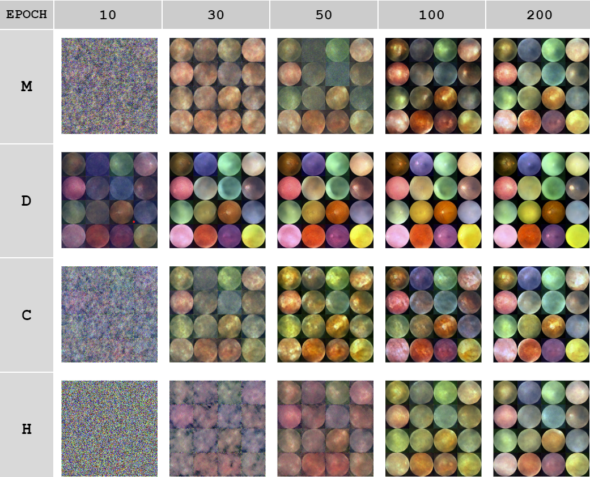

Introduction
The main question we're tackling in our project is to examine how effectively we can apply an ocular lesion/ocular disease dataset to a solution proposed in the “LesionAid: Vision Transformers-based Skin Lesion Generation and Classification” by Krishna et al. Our data consists of images of ocular diseases labeled with one of eight classes, each representing a different ocular condition, and a ‘Normal’ class. Similar to the original paper, we aim to generate synthetic and augmented images to address class imbalance. We aim to investigate the effectiveness of the paper’s proposed method of using synthetic images to solve the issue of class imbalance, as opposed to the more basic, and less costly, method of resampling, in which samples from minority classes are repeated to fill the gaps. We follow a similar process to a paper but with different approaches at each step. Specifically, we use a diffusion model for image generation instead of a ViTGAN, and for image classification, we use a pretrained ResNet on which we fine-tune our ocular disease data.Paper Review
This paper discusses the importance of early detection of skin lesions in the dermatology field, and proposes the LesionAid, a system containing a deep learning architecture that can be used for early detection of skin lesions through image classification. It starts off discussing the anticipated challenges with implementing this system, and identifies that the main issue is the existence of class imbalance within their skin lesion dataset. This issue could potentially lead to overfitting and difficulty with creating a generalizable model. To handle this issue, the first component of their system is a Vision Transformer-based Generative Adversarial Network (ViTGAN), trained on the original images to generate synthetic images to aid in better balancing out the minority classes. The combined set of original and synthetic images are then transformed with the same augmentations, before being passed into the Vision Transformer (ViT) component of their system, to be used as training data. The next component in the system proposed is the Gradient-weighted Class Activation Mapping (GradCAM), implemented to better explain the performance of their ViTGAN, and also identify potential errors or biases. The last component of this system is a front-end web application, which can be used as a diagnostic tool.For the sake of our project we focus mainly on the paper’s choice to use synthetic images to mitigate their concern of class imbalance. The LesionAid system uses the synthetic output of ViTGANs and adopts this data as a part of their Lesion database, which is eventually used for lesion classification.They were able to achieve good results with this system, resulting with 99.2 percent and 97.4 percent training and validation accuracy as their highest rates. As such, we would like to investigate this technique of class imbalance and evaluate its effectiveness by implementing it with new techniques and applicability to ocular disease image data.
Method
Our implementation aims to evaluate the solution of class imbalance proposed in the original paper. First, we split the original dataset (https://www.kaggle.com/datasets/andrewmvd/ocular-disease-recognition-odir5k) into a train and test set. We then balance the training set through resampling, or repeating samples from classes with less samples. We then emulate the study and generate synthetic images, though we use diffusion models over GANs, as our second approach to class imbalance. The two balanced datasets are consequently used to fine-tune two separate ResNet models which are evaluated on the held out test set of images.
The project code is available in the "code" folder of rachaeltc/class_imbalance_4440
Image Synthesizing: Diffusion Model and Image Augmentation
In the first component, image synthesis, we aim to generate synthetic images for different labels of ocular lesions, with the intent of mitigating class imbalance. For this purpose, we train a UNet2DModel from scratch, through Huggingface. THe Unet2DModel is based on the UNet Model, which was developed with the motivation of being able to successfully train deep networks with fewer training samples. They achieve this through a U-shaped architecture, consisting of an encoder, the contracting path, and the decoder, the expanding path. One of the main benefits of this model is that it can output images that are the same size as the input, and was successfully tested on biomedical image segmentation. The image data is first loaded into a Custom Dataset class, which resizes (to 64x64) and normalizes the images to become the training data for this model. The purpose of the UNet2DModel is to denoise the input samples– it takes in a noisy sample and a timestep, and returns a sample-shaped output. We trained a separate diffusion model for each of the eight classes of our data, and used these models to generate synthetic ocular images to be prepared as training data for image classification.
We also employed image augmentation techniques, from the torchvision transforms library, to augment original images to create more samples within classes that were lacking samples. This included random rotation, random cropping, horizontal and vertical flip, as well as variations in brightness, saturation, and hue.
Vision Transformer for Image Classification
For the Vision Transformer for Image Classification we created a SyntheticDataset class which was meant to be used to generate the synthetic images for training. This class helped initialize the dataset, providing the total number of samples in the dataset, as well as the actual generation of synthetic images as well as their corresponding labels by the generator function. From there, an instance of this class is create with the previously trained generator and wrapped in a data loader so that it can iterate over all of the different shuffled batches of data throughout the training process. In terms of the actual model, we used a pre-trained ResNet50, a convolutional neural network architecture, model for the image classification. From there cross-entropy loss is used as the loss function to optimize the model followed by the actual training loop for the image classification. That being said, because we struggled with incredibly long run times with run times for the training loop.
Findings
 We can see that the original dataset contained a disproportionate amount of the ‘N’ class, with over 2500 samples, compared to the ‘M’, ‘H’, ‘A’, ‘G’ classes, which have less than 300 each. After performing image synthesis and augmentation, we can produce more balanced classes with the artificial data.
We can see that the original dataset contained a disproportionate amount of the ‘N’ class, with over 2500 samples, compared to the ‘M’, ‘H’, ‘A’, ‘G’ classes, which have less than 300 each. After performing image synthesis and augmentation, we can produce more balanced classes with the artificial data.
Here are some examples of images generated through the diffusion model, through the epochs: 
[FID Score Comparison by Label]
[Image Classification Results in Progress]
to add Accuracy vs Epoch graph, Epoch vs Loss trend graph
Conclusion
[conclusion]References
[1] Ghanta Sai Krishna and Kundrapu Supriya and Mallikharjuna Rao K and Meetiksha Sorgile. LesionAid: Vision Transformers-based Skin Lesion Generation and Classification. arXiv:2302.01104, February 2023.
[2] Olaf Ronneberger and Philipp Fischer and Thomas Brox. U-Net: Convolutional Networks for Biomedical Image Segmentation. arXiv:1505.04597, May 2015.
Team Members
Sarah Casale, Rachael Cheung